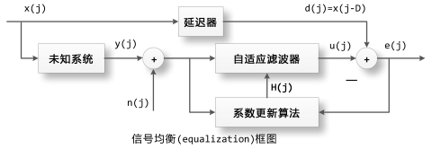

自适应滤波器和NLMS模拟
本章将简要介绍自适应滤波器的原理以及其最常用的算法NLMS，并给NLMS算法的两种实现方法：用纯Python编写，和用ctypes调用C语言编写。最后将对NLMS算法进行一些的实验。
自适应滤波器简介
近年来，随着数字信号处理器的功能的不断增强，自适应信号处理 (adaptive signal process)活跃在噪声消除、回声控制、信号预测、声音定位等众多信号处理领域。
尽管其应用领域十分广泛，但基本的系统构造大致只有如下几种分类。
系统辨识
所谓系统辨识(system identification)，就是通过对未知系统的输入输出进行观测，构造一个滤波器使得它在同样的输入的情况下，输出信号和未知系统相同。简而言之，就是通过观测未知系统对输入的反应，探知其内部情况。为了探知内情而使用的输入信号我们称之为参照信号。
系统识别(System Identification)的框图
如上图所示参照信号 x(j)同时输入到未知系统和自适应滤波器H中，未知系统的输出为y(j)， 自适应滤波器的输出为u(j)，由于观测误差或者外部噪声的干扰，实际观测到的未知系统的输出为d(j)=y(j)+n(j)，n(j)被称为外部干扰。通过求的d(j)和u(j)之间的误差e(j)=d(j)-u(j)，我们可以知道自适应滤波器H和未知系统还有多少差别，通过这个误差我们更新H的内部参数，使得它更加靠近未知系统。
上面各个公式中的j表示某一时刻，因为我们讨论的是数字信号处理，已经对所有的信号进行取样，因此可以把j简单的看作取样点的下标。
信号预测
所谓信号预测就是通过信号过去的值预测（计算）现在的值，下面是信号预测的系统框图。
信号预测(Predication)框图
x(j)是待预测的信号，假设我们无法完美地观测此信号，因此导入一个外部干扰n(j)，这样d(j)=x(j)+n(j)就是我们观测到的待预测信号。
通过延迟器将d(j)进行延时得到d(j-D)，并把d(j-D)输入到自适应滤波器H中，得到其输出为u(j)，u(j)就是自适应滤波器通过待预测信号过去的值预测出的现在的值，计算观测值d(j)和预测值u(j)之间的误差e(j)=d(j)-u(j)，通过e(j)更新自适应滤波器H的内部系数使得其输出更加接近d(j)。
如果x(j)存在白色噪声的成分和周期信号的成分，由于白色噪声是完全不自相关，无法预测的信号，因此通过过去的值x(j-D)所能预测的只能是其中的周期信号的成分。这样自适应滤波器H的输出信号u(j)就会与周期信号成分渐渐逼近，而e(j)则是剩下的不可预测的白色噪声的成分。因此自适应滤波器也可以运用于噪声消除。
信号均衡

信号均衡(Equalization)框图
当信号x(j)通过未知系统之后变成y(j)，未知系统对信号x(j)进行了某种改变，使得其波形产生歪曲。我们希望均衡器矫正这种歪曲，也就是通过y(j)重建原始信号x(j)，由于因果律还原原始信号x(j)是不可能的，我们只能还原其延时了的信号x(j-D)。x(j)和x(j-D)除了时间上的延迟之外，其它特性完全相同。
这里我们将观测到的未知系统的输出y(j)+n(j)输入到自适应滤波器H中，通过H的系数更新使得其输出u(j)逐渐逼近原始信号的延时x(j-D)。这样我们就构建了一个滤波器H使得它与未知系统的卷积正好等于一个脉冲传递函数。也就是说H的频域特性恰好能抵消未知系统的所带来的改变。
NLMS计算公式
自适应滤波器中最重要的一个环节就是其系数的更新算法，如果不对自适应滤波器的系数更新的话，那么它就只是一个普通的FIR滤波器了。系数更新算法有很多种类，最基本、常用、简单的一种方法叫做NLMS(归一化最小均方)，让我们先来看看它的数学公式表达：
设置自适应滤波器系数 的所有初始值为0, 的长度为I。

对每个取样值进行如下计算，其中n=0, 1, 2, ...

自适应滤波器系数 是一个长度为I的矢量，也就是一个长度为I的FIR滤波器。在时刻n，滤波器的每个系数对应的输入信号为  ，它也是一个长度为I的矢量。这两个矢量的点乘即为滤波器的输出和目标信号d(n)之间的差为e(n)，然后根据e(n)和 ， 更新滤波器的系数。
，它也是一个长度为I的矢量。这两个矢量的点乘即为滤波器的输出和目标信号d(n)之间的差为e(n)，然后根据e(n)和 ， 更新滤波器的系数。
数学公式总是令人难以理解的，下面我们以图示为例进行说明：
NLMS算法示意图
图中假设自适应滤波器h的长度为4，在时刻7滤波器的输出为:
u[7] = h[0]*x[7] + h[1]*x[6] + h[2]*x[5] + h[3]*x[4]
滤波器的输入信号的平方和powerX为:
powerX = x[4]*x[4] + x[5]*x[5] + x[6]*x[6] + x[7]*x[7]
未知系统的输出d[7]和滤波器的输出u[7]之间的差为:
e[7] = d[7] - u[7]
使用u[7]和x[4]..x[7]对滤波器的系数更新:
h[4] = h[4] + u * e[7]*x[4]/powerX
h[4] = h[5] + u * e[7]*x[5]/powerX
h[4] = h[6] + u * e[7]*x[6]/powerX
h[4] = h[7] + u * e[7]*x[7]/powerX
其中参数u成为更新系数，为0到1之间的一个实数，此值越大系数更新的速度越快。对于每个时刻i都需要进行上述的计算，因此滤波器的系数对于每个参照信号x的取样都更新一次。
NumPy实现
按照上面介绍的NLMS算法，我们很容易写出用NumPy实现的NLMS计算程序：
# -*- coding: utf-8 -*-
# filename: nlms_numpy.py
import numpy as np
# 用Numpy实现的NLMS算法
# x为参照信号，d为目标信号，h为自适应滤波器的初值
# step_size为更新系数
def nlms(x, d, h, step_size=0.5):
i = len(h)
size = len(x)
# 计算输入到h中的参照信号的乘方he
power = np.sum( x[i:i-len(h):-1] * x[i:i-len(h):-1] )
u = np.zeros(size, dtype=np.float64)
while True:
x_input = x[i:i-len(h):-1]
u[i] = np.dot(x_input , h)
e = d[i] - u[i]
h += step_size * e / power * x_input
power -= x_input[-1] * x_input[-1] # 减去最早的取样
i+=1
if i >= size: return u
power += x[i] * x[i] # 增加最新的取样
为了节省计算时间，我们用一个临时变量power保存输入到滤波器h中的参照信号x的能量。在对于x中的每个取样的循环中，power减去x中最早的一个取样值的乘方，增加最新的一个取样值的乘方。这样为了计算参照信号的能量，每次循环只需要计算两次乘法和两次加法即可。
nlms函数的输入为参照信号x、目标信号d和自适应滤波器的系数h。因为在后面的模拟计算中，d是x和未知系统的脉冲响应的卷积而计算的来，它的长度会大于x的参数，因此循环体的循环次数以参照信号的长度为基准。
为了对自适应滤波器的各种应用进行模拟，我们还需要如下的几个辅助函数，完整的程序请参考 NLMS算法的模拟测试 。
def make_path(delay, length):
path_length = length - delay
h = np.zeros(length, np.float64)
h[delay:] = np.random.standard_normal(path_length) * np.exp( np.linspace(0, -4, path_length) )
h /= np.sqrt(np.sum(h*h))
return h
make_path产生一个长度为length，最小延时为delay的指数衰减的波形。这种波形和封闭空间的声音的传递函数有些类似之处，因此在计算机上进行声音的算法模拟时经常用这种波形作为系统的传递函数。:
def plot_converge(y, u, label=""):
size = len(u)
avg_number = 200
e = np.power(y[:size] - u, 2)
tmp = e[:int(size/avg_number)*avg_number]
tmp.shape = -1, avg_number
avg = np.average( tmp, axis=1 )
pl.plot(np.linspace(0, size, len(avg)), 10*np.log10(avg), linewidth=2.0, label=label)
def diff_db(h0, h):
return 10*np.log10(np.sum((h0-h)*(h0-h)) / np.sum(h0*h0))
plot_converge绘制信号y和信号u之间的误差，每avg_number个取样点就上一次误差的乘方的平均值。我们将用plot_converge函数绘制未知系统的输出y和自适应滤波器的输出u之间的误差。观察自适应滤波器是如何收敛的，以评价自适应滤波器的收敛特性。diff_db函数同样是用来评价自适应滤波器的收敛特性，不过他是直接计算未知系统的传递函数h0和自适应滤波器的传递函数h之间的误差。下面我们会看到这两个函数得到的收敛值是相同的。
系统辨识模拟
我们用下面的函数调用nlms算法对系统辨识应用进行模拟：
def sim_system_identify(nlms, x, h0, step_size, noise_scale):
y = np.convolve(x, h0)
d = y + np.random.standard_normal(len(y)) * noise_scale # 添加白色噪声的外部干扰
h = np.zeros(len(h0), np.float64) # 自适应滤波器的长度和未知系统长度相同，初始值为0
u = nlms( x, d, h, step_size )
return y, u, h
系统识别(System Identification)的框图
此函数的参数分别为：
- nlms : nlms算法的实现函数
- x : 参照信号
- h0 : 未知系统的传递函数，虽然是未知系统，但是计算机模拟时它是已知的
- step_size : nlms算法的更新系数
- noise_scale : 外部干扰的系数，此系数决定外部干扰的大小，0表示没有外部干扰
函数的返回值分别为：
- y : 未知系统的输出，不包括外部干扰
- u : 自适应滤波器的输出
- h : 自适应滤波器的最终的系数
最后我们用下面的函数创建未知系统h0， 参照信号x，然后调用sim_system_identify函数得到结果并且绘图：
def system_identify_test1():
h0 = make_path(32, 256) # 随机产生一个未知系统的传递函数
x = np.random.standard_normal(10000) # 参照信号为白噪声
y, u, h = sim_system_identify(nlms_numpy.nlms, x, h0, 0.5, 0.1)
print diff_db(h0, h)
pl.figure( figsize=(8, 6) )
pl.subplot(211)
pl.subplots_adjust(hspace=0.4)
pl.plot(h0, c="r")
pl.plot(h, c="b")
pl.title(u"未知系统和收敛后的滤波器的系数比较")
pl.subplot(212)
plot_converge(y, u)
pl.title(u"自适应滤波器收敛特性")
pl.xlabel("Iterations (samples)")
pl.ylabel("Converge Level (dB)")
pl.show()

自适应滤波器收敛之后的系数和收敛速度
上部的图显示的是未知系统(红色)和自适应滤波器(蓝色)的传递函数的系数，我们看到自适应滤波器已经十分接近未知系统了。diff_db(h0, h)的输出为-25.35dB。下部的图通过绘制y和u之间的误差，显示了自适应滤波器的收敛过程。我们看到经过约3000点的计算之后，收敛过程已经饱和，最终的误差为-25dB左右，和diff_db计算的结果一致。
从图中可以看到收敛过程的两个重要特性：收敛时间和收敛精度。参照信号的特性、外部干扰的大小和更新系数都会影响这两个特性。下面让我们看看参照信号为白色噪声、外部干扰的能量固定时，更新系数对它们影响：
def system_identify_test2():
h0 = make_path(32, 256) # 随机产生一个未知系统的传递函数
x = np.random.standard_normal(20000) # 参照信号为白噪声
pl.figure(figsize=(8,4))
for step_size in np.arange(0.1, 1.0, 0.2):
y, u, h = sim_system_identify(nlms_numpy.nlms, x, h0, step_size, 0.1)
plot_converge(y, u, label=u"μ=%s" % step_size)
pl.title(u"更新系数和收敛特性的关系")
pl.xlabel("Iterations (samples)")
pl.ylabel("Converge Level (dB)")
pl.legend()
pl.show()
更新系数和收敛速度的关系
下面是更新系数固定，外部干扰能量变化时的收敛特性：
def system_identify_test3():
h0 = make_path(32, 256) # 随机产生一个未知系统的传递函数
x = np.random.standard_normal(20000) # 参照信号为白噪声
pl.figure(figsize=(8,4))
for noise_scale in [0.05, 0.1, 0.2, 0.4, 0.8]:
y, u, h = sim_system_identify(nlms_numpy.nlms, x, h0, 0.5, noise_scale)
plot_converge(y, u, label=u"noise=%s" % noise_scale)
pl.title(u"外部干扰和收敛特性的关系")
pl.xlabel("Iterations (samples)")
pl.ylabel("Converge Level (dB)")
pl.legend()
pl.show()

外部干扰噪声和收敛速度的关系
从上面的图可以看出，当外部干扰的振幅增加一倍、能能量增加6dB时，收敛精度降低6dB。而由于更新系数相同，所以收敛过程中的收敛速度都是一样的。
信号均衡模拟
对于信号均衡的应用我们用如下的程序进行模拟：
def sim_signal_equation(nlms, x, h0, D, step_size, noise_scale):
d = x[:-D]
x = x[D:]
y = np.convolve(x, h0)[:len(x)]
h = np.zeros(2*len(h0)+2*D, np.float64)
y += np.random.standard_normal(len(y)) * noise_scale
u = nlms(y, d, h, step_size)
return h
信号均衡(Equalization)框图
sim_signal_equation函数的参数：
- nlms : nlms算法的实现函数
- x : 未知系统的输入信号
- h0 : 未知系统的传递函数
- D : 延迟器的延时参数
- step_size : nlms算法的更新系数
- noise_scale : 外部干扰的系数，此系数决定外部干扰的大小，0表示没有外部干扰
在函数中的各个局部变量：
- d : 输入信号经过延迟器之后的信号
- y : 未知系统的输出
- h : 自适应滤波器的系数，它的长度要足够长，程序中使用 2倍延时 + 2倍未知系统的传递函数的长度
函数的返回值为自适应滤波器收敛后的系数，它能够均衡h0对输入信号所造成的影响。我们通过下面的函数产生数据、调用模拟函数以及绘制结果：
def signal_equation_test1():
h0 = make_path(5, 64)
D = 128
length = 20000
data = np.random.standard_normal(length+D)
h = sim_signal_equation(nlms_numpy.nlms, data, h0, D, 0.5, 0.1)
pl.figure(figsize=(8,4))
pl.plot(h0, label=u"未知系统")
pl.plot(h, label=u"自适应滤波器")
pl.plot(np.convolve(h0, h), label=u"二者卷积")
pl.title(u"信号均衡演示")
pl.legend()
w0, H0 = scipy.signal.freqz(h0, worN = 1000)
w, H = scipy.signal.freqz(h, worN = 1000)
pl.figure(figsize=(8,4))
pl.plot(w0, 20*np.log10(np.abs(H0)), w, 20*np.log10(np.abs(H)))
pl.title(u"未知系统和自适应滤波器的振幅特性")
pl.xlabel(u"圆频率")
pl.ylabel(u"振幅(dB)")
pl.show()
如果延迟器的延时D不够的话，会由于因果律使得自适应滤波器无法收敛。因此这里我们采用的D的长度为h0的长度的2倍。下图显示h0, h和它们的卷积。我们看到h0和h的卷积正好是一个脉冲，其延时为正好等于D(128)。
未知系统和自适应滤波器的级联(卷积)近似为标准延迟
下图显示未知系统的频率响应(蓝色)和自适应滤波器的频率响应(绿色)，我们看到二者正好相反，也就是说自适应滤波器均衡了未知系统对信号的影响。

未知系统和自适应滤波器的频率响应正好相反
卷积逆运算
虽然卷积运算最终能归结为简单的加法和乘法运算，然而卷积的逆运算就不是很容易计算了。我们知道两个线性系统h1和h2的级联h3可以用它们的脉冲响应的卷积计算求得，而所谓卷积的逆运算可以想象为已知h3和h1，求一个h2使它和h1级联之后正好等于h3。
根据卷积的计算公式可知，如果h1的长度为100，h3的长度为199，那么h2的长度则为100，因为h2的每个系数都是未知的，于是就有100个未知数，而这100个未知数需要满足199个线性方程：h3中的每个系数都有一个方程与之对应。由于方程数大于未知数的个数，显然对于任意的h1和h3并不能保证有一个h2使得它和h1的卷积正好等于h3。
既然不能精确求解，那么卷积的逆运算就变成了一个误差最小化的优化问题。用自适应滤波器计算卷积的逆运算和计算信号均衡类似，将白色噪声x输入到h1中得到信号u，将x输入到h3中得到信号d，然后使用u作为参照信号，d作为目标信号进行NLMS计算，最终收敛后的自适应滤波器的系数就是h2。
下面的程序模拟这一过程：
# -*- coding: utf-8 -*-
import numpy as np
import pylab as pl
from nlms_numpy import nlms
import scipy.signal as signal
def inv_convolve(h1, h3, length):
x = np.random.standard_normal(10000)
u = signal.lfilter(h1, 1, x)
d = signal.lfilter(h3, 1, x)
h = np.zeros(length, np.float64)
nlms(u, d, h, 0.1)
return h
h1 = np.fromfile("h1.txt", sep="\n")
h1 /= np.max(h1)
h3 = np.fromfile("h3.txt", sep="\n")
h3 /= np.max(h3)
pl.rc('legend', fontsize=10)
pl.subplot(411)
pl.plot(h3, label="h3")
pl.plot(h1, label="h1")
pl.legend()
pl.gca().set_yticklabels([])
for idx, length in enumerate([128, 256, 512]):
pl.subplot(412+idx)
h2 = inv_convolve(h1, h3, length)
pl.plot(np.convolve(h1, h2)[:len(h3)], label="h1*h2(%s)" % length)
pl.legend()
pl.gca().set_yticklabels([])
pl.gca().set_xticklabels([])
pl.show()
下面是程序的计算结果：

卷积逆运算演示
程序中的h1和h3从文本文件中读取而得，它们是ANC(能动噪声控制)系统中实际测量的脉冲响应。如果能找到一个h2满足卷积条件的话，就能够有效的进行噪声控制。
程序计算出h2的长度分别为128, 256, 512时的结果，可以看出h2越长结果越精确。